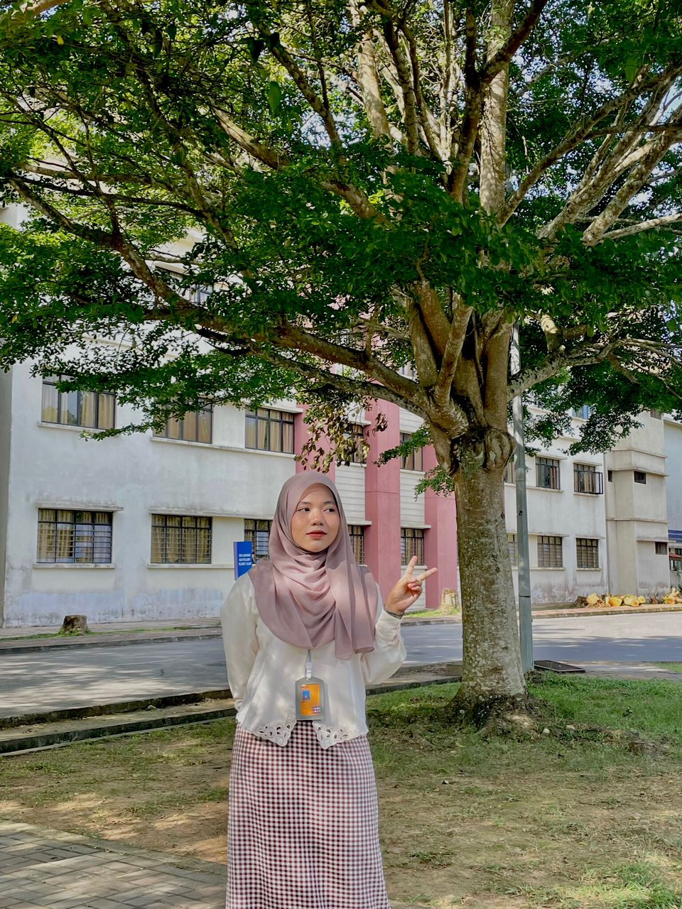

Home
Biodata
Education
Family
Gallery
Videos
About Me
✧˖° LETS GET TO KNOW ME ✧˖°
❃ BIODATA ❃

MY SELF ♥
Name
Iman Fatehah Bt Sokri
Age
21 Years Old
Date Of Birthday
31 March 2002
Hoby
Cycling
Born in
Wisma Pakar Perbidanan Dan Sakit Puan
Favourite food
Sambal udang
Live in
Sungai Petani Kedah